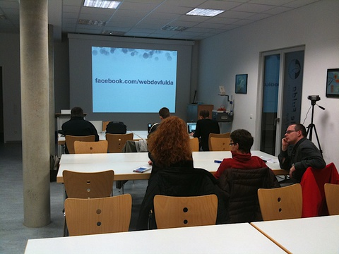
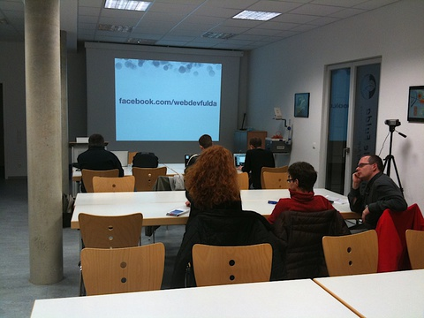

Application Development
Whether you want to start a new business or have a problem with your current one, chances are you need custom made software. By asking the right questions, I'll help you define the problem and find a solution that will fit your needs. Based on the concept we create together, I'll develop the application using test driven development, resulting in an application with low total cost of ownership.
Code Reviews
Are you worried about the quality of your codebase? Let me have a look at it! I'll analyse your current codebase and give you an in-depth status report. I'll help you figure out the key issues and give you recommendations on what to improve. If you want, I'll also help you fix these issues afterwards.
Rescue Missions
Some software projects end up in an unstable mess and never get finished. After carefully reviewing what you already got, I'll help you get your project back on track by increasing the test coverage and refactoring the critical hot spots of your codebase. You'll end up with a more robust and more maintainable application than before.
Mentoring
Are you or your team lacking experience in developing web-based software? Or do you simply want to improve your software development skills? Instead of spending hours figuring out a solution, ask me for advice! Using pair programming I'll help you to learn and improve. I'll answer your questions and share my knowledge, gained in more than 10 years of software development. You'll not only develop higher quality software, but also cut down development costs in the long run.
 

Coaching
Getting started with Ruby, Rails or new programming practices (such as test driven development), is a tedious task. Learning curves for new technologies can be steep. I can help you to get started faster by coaching you and your team in-house. I'll teach you all the aspects you need to continue growing your application on your own. You'll be able to reduce development costs by having a proficient team and ultimately launch your product faster.